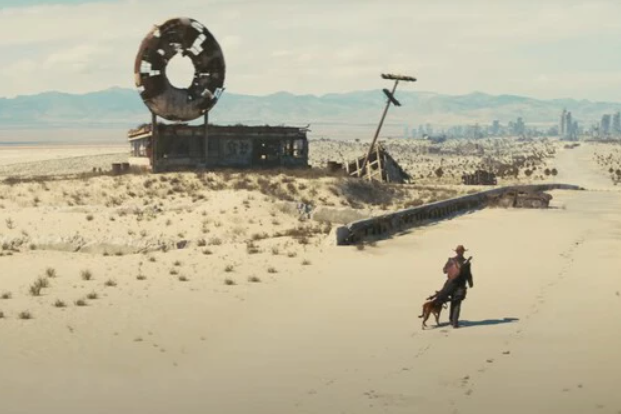
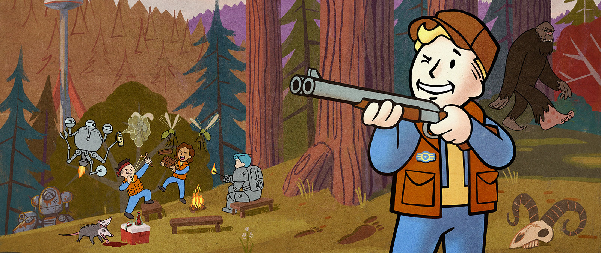

Vista panorámica del lugar

Ubicada entre losas de concreto pre-guerra y protegida por imponentes muros de chatarra reforzada, Diamond City se alza como un faro de civilización y comercio en medio de las peligrosas tierras del Yermo.
Aquí combinamos la resistencia de los sobrevivientes con la tecnología recuperada del viejo mundo. Te invitamos a descubrir nuestras rutas comerciales, zonas seguras y eventos culturales.
¿Planeando tu visita? Salta al resumen de atractivos destacados.
Una mirada rápida a lo que nuestra ciudad tiene para ofrecerte:

